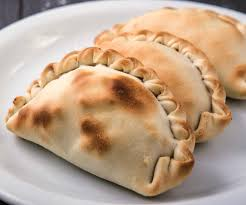

Comida Típica Brasileira
Enquanto conceito, a comida típica, está para além dos atuais hábitos alimentares grupais. O senso comum geralmente propõe um olhar nas origens geográficas dos ingredientes, técnicas de preparo e influências de outros povos, que possam existir.
Algumas das Receitas:
- Feijoada.
- Arroz carreteiro.
- Coxinha.
- Moqueca de peixe.
- Acarajé.
- Pato no tucupi.
- Bobó de camarão.
- Leitão à pururuca.
Site para mais informações

Comida Típica Argentina
Enquanto conceito, a comida típica, está para além dos atuais hábitos alimentares grupais. O senso comum geralmente propõe um olhar nas origens geográficas dos ingredientes, técnicas de preparo e influências de outros povos, que possam existir.
Algumas das Receitas:
- Medialunas.
- Choripán com queijo.
- Coxinha.
- Chorizo com fondue de queijos e batatas.
- Alfajor de maisena.
- Empanadas Salteñas.
- Doce de Leite.
- Vinho.
Site para mais informações
Receita Culinária
É um texto que vai oferecer a quem lê AS INSTRUÇÕES para fazer alguma coisa. No caso de uma RECEITA CULINÁRIA, ela apresenta duas partes claras: INGREDIENTES (Lista de coisas que será utilizada na receita) e MODO DE FAZER (Explicação passo a passo de como preparar o alimento).
Bolo de liquidificador fácil.

Ingredientes :
- 3 ovos
- 2 xícaras de chá de açúcar
- 2 colheres de sopa de margarina
- 1 xícara de chá de leite
- 2 xícaras de chá de farinha de trigo
- 1 colher de sopa de fermento em pó
Receita do bolo
